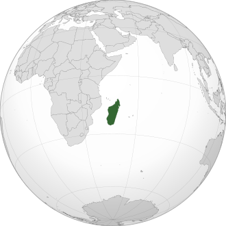
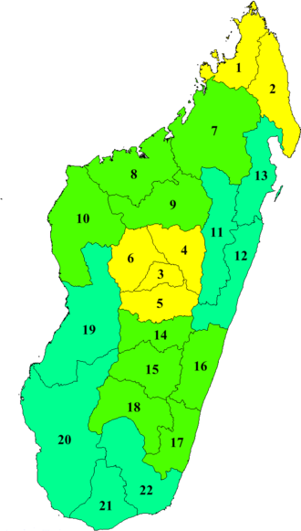

Madagascar, en forme longue la république de Madagascar, en malgache : Madagasikara et Repoblikan'i Madagasikara, est un état insulaire situé dans l'Océan Indien et géographiquement rattaché au continent africain, dont il est séparé par le canal du Mozambique. C’est la cinquième plus grande île du monde après l'Australie, le Groenland, la Nouvelle-Guinée et Bornéo. Longue de 1 580 km et large de 580 km, Madagascar couvre une superficie de 587 000 km2. Sa capitale est Antananarivo6 et le pays a pour monnaie l'ariary. Ses habitants, les Malgaches, sont un peuple austronésien parlant une langue malayo-polynésienne : le malgache. Le pays est entouré par d'autres îles et archipels dont l'île Maurice, les Seychelles, Mayotte, les Comores et La Réunion.
Le pays est divisé en six provinces (faritany) historiques, de même nom que celui de leurs capitales : Antananarivo (ou Tananarive), Antsiranana (ou Diego-Suarez), Fianarantsoa, Mahajanga (ou Majunga), Toamasina (ou Tamatave) et Toliara (ou Tuléar).
